物之再生 / 工作台交互研究同一张原图，怎么做出自己的花样？
从局部贴花到整面满铺
在「试器物」选碗，打开「印花位置」并选「外壁满铺」。此时可转动碗查看背面。点「摆放图案」可拖动纹样、双指调节疏密和方向，也可以直接选择组数。正立的花纹设为 1 组时沿整圈展开一次。局部和满铺各自记住摆放参数。
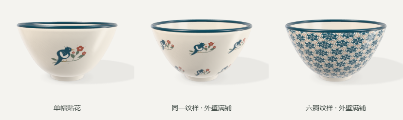
同一器型的三个可编辑结果。
新增杯身满铺、盘面满铺、碗与盆的外壁及内面满铺。外壁以一整圈为周期，组数可在 1 至 24 之间选择。内面从中心沿曲面展开，疏密范围为 1 至 10 组。沿用二维设计的透明与留白，照片自身边缘也会随单元重复。旋转时沿圆周对齐整周期，避免最后一组被硬切断。
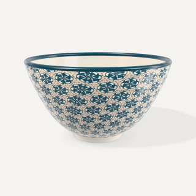
满花 · 正面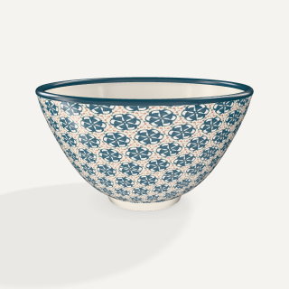
同一件作品 · 背面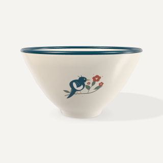
碗腹轮廓 · 修改前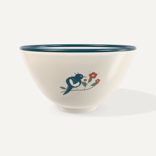
同角度 · 修改后碗腹稍加圆润，盘、碗、盆的侧壁与内面使用连续曲线连接原有轮廓点。碗足和卷口保留各自的转折。内壁的间接光根据该位置透过器口能接收到的环境光估算。模型与材质均为设计示意。
实现、运行与验收
沿用项目中的 Three.js。经向使用旋转体自带的圆周坐标，另一方向按实际轮廓弧长展开。真实纹样通过周期纹理采样，区域遮罩限制在目标曲面。 Three.js 的 LatheGeometry 源码
主要变更在 prototype/vessels.js、cup-view.js、editor-object.js、workbench.css，以及 source/cup-geometry.mjs、vessel-geometry.mjs、enamel-ink.mjs、cup3d.js。已重建三维脚本与两个单文件入口。
94 项单元测试通过。在独立 Edge 手机模拟会话中，测试了全部 6 个新满铺区域、原有 12 个区域、四角度渲染、单指移动、双指缩放旋转、疏密、撤销重做、重新进入、静态预览与保存作品。使用纯色测试图分别检查了接缝两侧、碗足和卷口。布局测试包含 320、375、390、430px。 渲染与交互测试 · 375px 操作界面
取色与搪瓷质感 · 同角度对照
在器物上点「釉色」，左右滑动选色相，上下寻找明暗。指尖旁的色样可在拖动时核对当前颜色。用下方「浓淡」滑条压低饱和度。「色板与数值」还可输入准确色值，器身的可选色板收录豆青、雾蓝、砖红等设计配色。
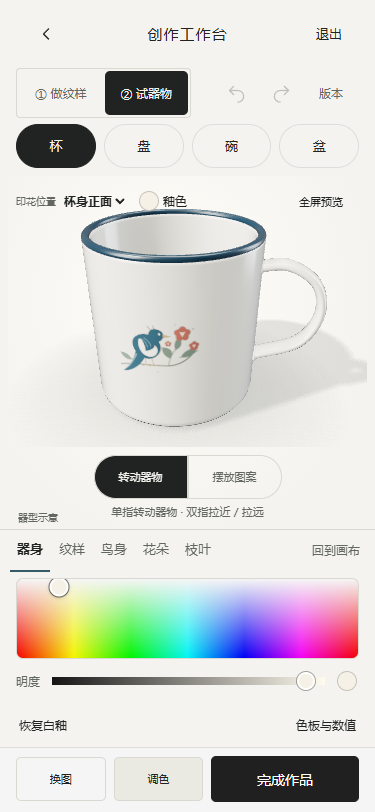
原工作台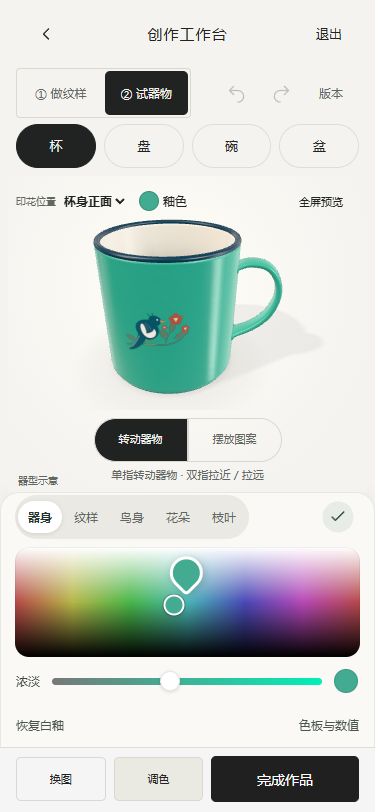
本版 · 正在取色 · 375px对照图使用同一喜鹊纹样、相同釉色色值、相同相机轨道角度与距离。新版调整了构图中心，让杯柄留在画幅内。下面两列分别为修改前和修改后。
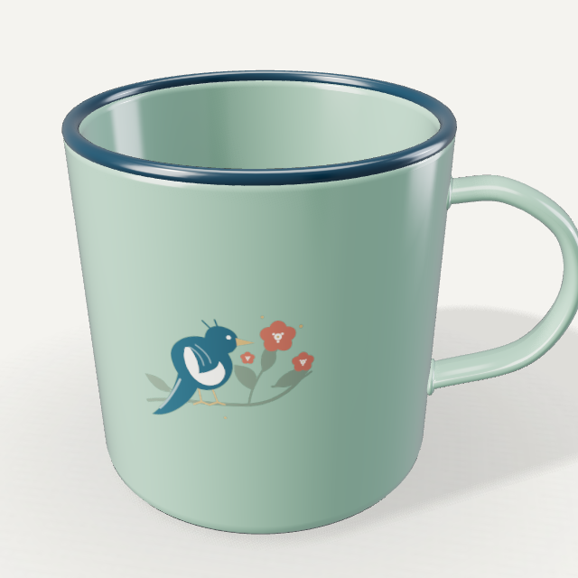
青绿 · 原版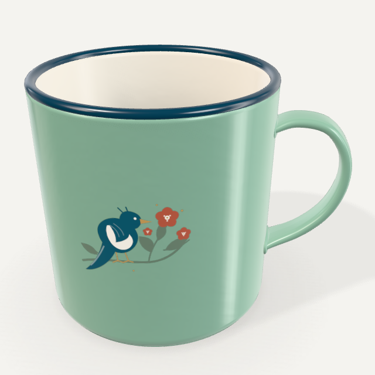
青绿 · 本版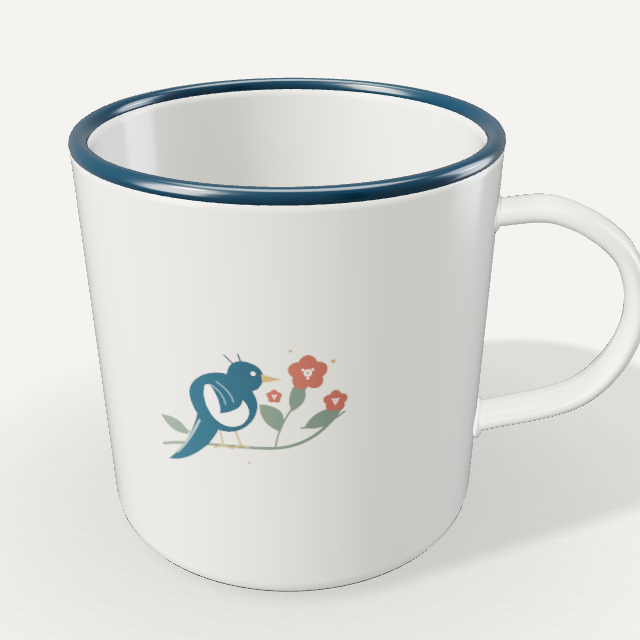
象牙白 · 原版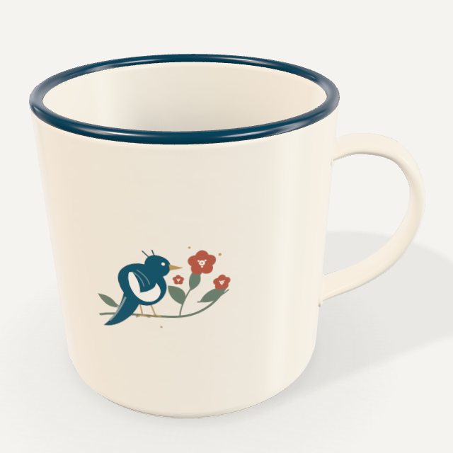
象牙白 · 本版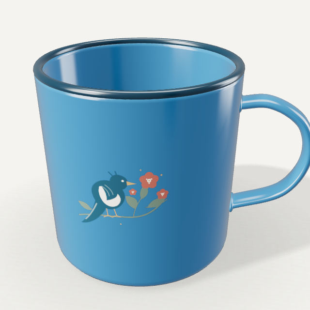
蓝釉 · 原版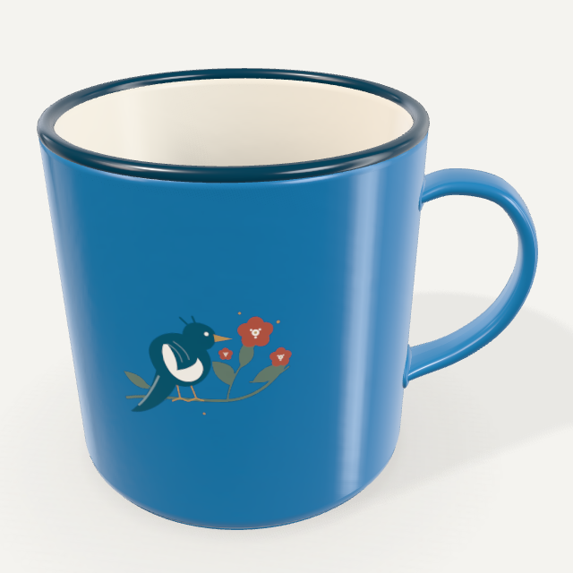
蓝釉 · 本版可辨认的材质来自反射的形状、曲面的细微变化，以及光在卷边、杯柄和杯壁上的连续变化。Apple 的材质文档说明了法线与表面粗糙度怎样共同控制这些视觉线索。本项目沿用 Three.js，在同一器身表面计算颜料、底釉和罩面。新杯保留暖白内釉，外壁与杯柄使用所选颜色。当前仍是程序化模型，烧成色与实物光泽尚待校准。 Apple 材质与照明 · iPhone 标记工具
资源、修改文件与验收
摄影棚光照使用 Sergej Majboroda 的 Studio Small 09，授权为 CC0。由 1K HDR 在线性光空间缩至 256×128，压缩过亮光源并加入一处侧面柔光反射，随三维脚本离线打包。纹理起伏为本项目程序化生成。 环境光原作 · 资源许可
取色与预览涉及 prototype/ink-picker.js、ink-picker.css、workbench.js、editor-object.js、cup-view.js、vessels.js。渲染涉及 source/cup3d.js、cup-geometry.mjs、vessel-geometry.mjs、enamel-ink.mjs、studio-small-09-256.hdr，以及 scripts/build-cup.cjs。已更新三维脚本与两个本地单文件入口。
验收包含三种釉色的同角度真实三维导出、取色坐标与屏幕颜色核对、12 个印花区的有墨／无墨像素对照、撤销、取消、保存、重新打开及 320、375、390、430px 手机视口模拟。 同角度渲染与取色测试
连续调色与器物印花位置
打开「调色」后直接在光谱上滑动。横向选色相，纵向调明暗，下方滑条调浓淡。手指移动时作品更新，松手才记一次撤销。需要精确输入时点「色板与数值」。这沿用了 iPhone 标记工具的光谱选择和连续反馈方式。 iPhone 使用手册 · Apple 连续选色说明
在「试器物」点预览左上角的釉色圆点可直接给器身上色。用「印花位置」选面，再点「摆放图案」拖动或双指缩放旋转。新切换到盆时从外壁开始，已有草稿会恢复之前的印花位置。
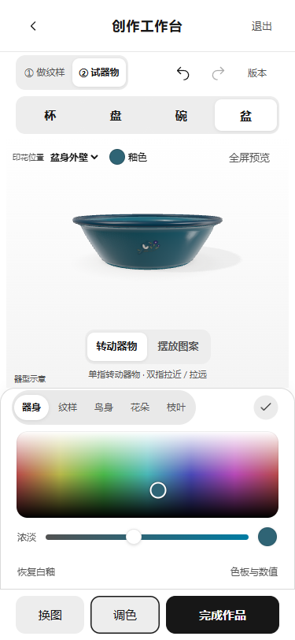
375px · 实际工作台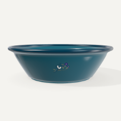
盆身外壁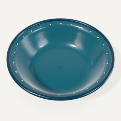
盆口花边杯支持正面、背面与杯口环带。盘支持盘心、盘沿与盘背。碗、盆均支持内侧、外壁与口沿。每次将同一纹样应用到选中的一个区域，切回时可恢复该区域的摆放参数。呈现为程序化搪瓷设计预览，实际烧成色需打样确认。
实现与验收
主要修改位于 prototype/ink-picker.js、workbench.js、workbench.css、editor-object.js、cup-view.js、vessels.js、foundation.js、schema.d.ts，以及 source/enamel-ink.mjs、cup3d.js。已重新打包三维脚本与单文件入口。
92 项单元测试通过。在 Edge 手机模拟中测试了手指未松开时的颜色变化、一次手势一次撤销、取消、外壁拖动、跨区记忆、刷新恢复、静态降级、返回三维及保存作品。对每个区域的有纹样和无纹样画面做了像素对照，并在 320、375、390、430px 检查了操作区域。 交互与渲染测试
本次实测 · 连续拖动与局部换色
在手机工作台选「六瓣镶花」，连续向右拖动相同距离。旧版的取景框到达原图边缘后停止。新版沿镜像相接的原图继续取样，取景框显示当前花样真正使用的三角区域。双指可以同时移动、缩放与转动取样。这个做法参考了 Repper 将取样窗口与拼接规则分开的操作。 Repper 取样说明
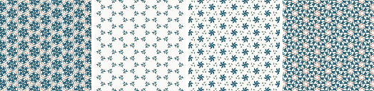
从左到右为初始画面，以及连续三次拖动后的实际导出。
在 375px 宽的手机视口，每次从画布宽度的 30% 拖到 58%。将导出图缩至 128×128，并计算与上一步相比，至少一个 RGB 通道相差 24 或以上的像素比例。旧版六瓣花样第三次变化为 0%，新版为 80.0%。这一比较针对同一张示意素材。
调色先选部位，再点色块。喜鹊图可单独改鸟身、花朵或枝叶，牡丹和双喜有自己的部位。上传图像直接提供整图配色。自选色盘保留光谱、双色与精确数值，默认色板只显示颜色。 Procreate Pocket 色板说明 · 375px 实际调色界面
保存成功提示、首页与积分页的宣传语已收起或移除。「我的作品」可展开存储说明。写入失败时显示原因和重试入口。浏览器测试注入一次写入失败，重试后恢复了原来的修改。
本次修改文件与运行方式
取样与调色涉及 prototype 下的 pattern-texture.js、workbench.js、workbench.css、touch-transform.js、art.js、ink-picker.js 和 app.js。字段持久化涉及 model.js、foundation.js、schema.d.ts、editor-model.js 和 work-result.js。页面文案涉及 views.js、manage-views.js、explore-home.js、inspiration.js 和 archive-views.js。三维脚本及两个单文件入口已重新构建。
测试更新位于 scripts/qa-direct-edit.cjs、qa-live-workbench.cjs、qa-image-return.cjs、qa-ink-picker.cjs、qa-symmetry-pixels.cjs、qa-round04.cjs 与 tests/workbench.test.cjs。运行 npm start 可在本机启动。已执行语法检查、91 项单元测试、构建、像素及触摸回归，覆盖 320、375、390、430px 的 Edge 手机模拟视口。
上次迭代 · 花样与釉面
旧版「试三种构图」把已有排布和取样参数配成三组。用户看得到三个结果，却很难发现是什么让它们变得不同。
三个编辑器怎样收纳工具
Repper Mobile · 让取样过程可见
对照团队的手机研究包，在 390px 手机浏览器模拟中走了选图、拖动、切到 Echo Tile 和打开 Effects。横向切换决定拼接规则，移动取样位置决定哪些线条和颜色进入重复。两种操作都有画面反馈。我们采用前一项选择加后一项直接操作，并让用户在搪瓷器物上也能看到结果。 Repper 官方手机网页版介绍
Lightroom Mobile · 先选效果，再决定调多少
其官方流程中，选用预设后才出现强度调整。我们的工作台因此删去了通用的「调细节」。选中回纹层叠时能看到层数与比例，选中鱼骨折线时能看到倾斜量。 Lightroom Mobile 预设操作说明
Procreate Pocket · 操作靠近被选中的对象
画笔库在对应画笔上提供选择与管理操作。我们把「调整」直接写在当前花样缩略图上，第一次使用也能看见入口。 Procreate Pocket 画笔界面说明
在工作台里试一次
点「六瓣镶花」，再点「六瓣镶花 · 调整」。拖动小图上的取景框，从鸟翼移到花枝，观察六瓣中心和重复边缘怎样变化。切到「试器物」后，也可以一边取样一边看盘面。换图会回到发起换图的面板。
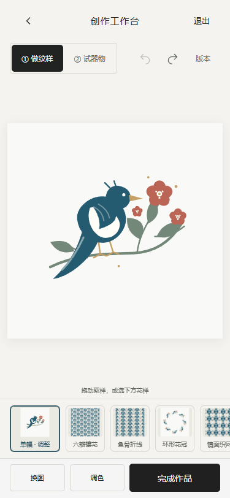
先选花样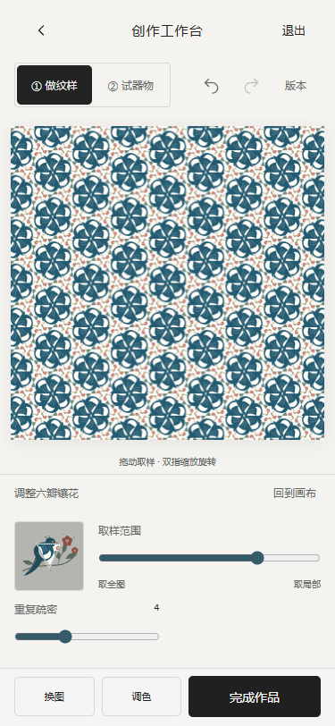
调整当前花样同一纹样与视角，修改前后
旧版把印花放在略高于器身的透明曲面上，单独计算反光，杯身展开时还会横向拉宽图案。新版让颜料参与器身本身的着色，釉面高光连续经过留白和印花。杯身按圆弧长度校正图案比例，盘、碗和盆分别沿内侧曲面着色。
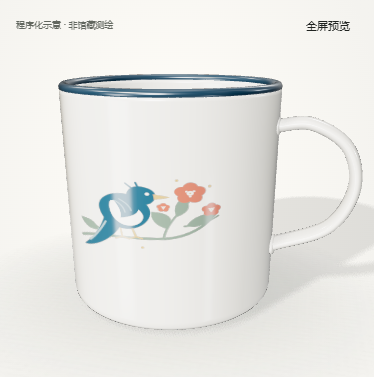
杯 · 旧版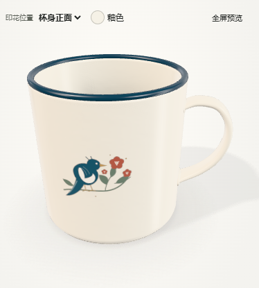
杯 · 新版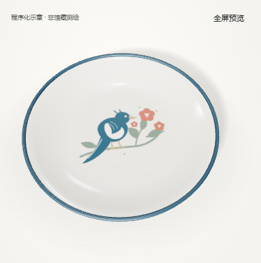
盘 · 旧版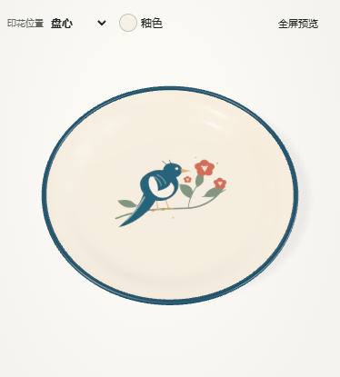
盘 · 新版白釉与蓝口沿可对照当代搪瓷产品的材质资料。本项目仍使用程序化器型，中华珐琅厂实物的釉色、光泽和烧成后的发色需要实物与打样校准。 Falcon Enamelware 材质与制作说明
实现与验收
工作台交互位于 workbench.js 与 workbench.css。釉面着色位于 enamel-ink.mjs，曲面贴图和灯光位于 cup3d.js。已更新浏览器用的三维脚本和两个单文件入口。
91 项单元测试、语法检查、三维打包与单文件构建通过。在 Edge 的手机尺寸模拟中测了 320、375、390、430px，包括花样调整、换图返回、撤销与重做、四器型切换、保存与刷新恢复。单文件版另测了取景框拖动时三维贴图实时更新，以及在盘面上直接移动纹样。 器物交互回归脚本